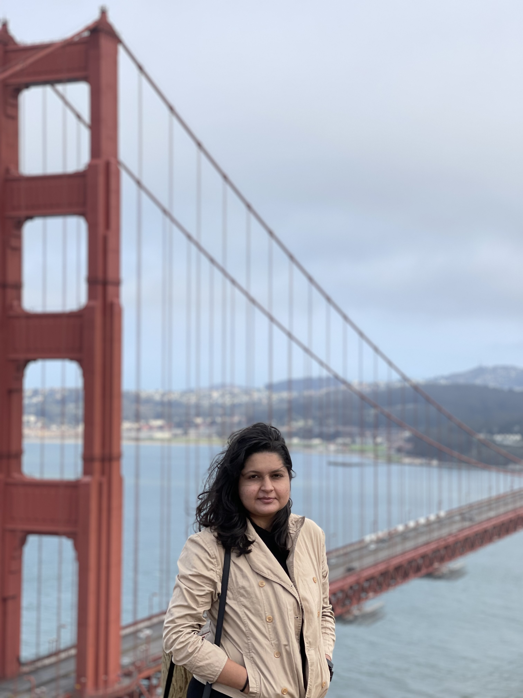

|
Aishwarya Chandrakant Kulkarni
|
|
Hey there! Welcome to my page. I am currently pursuing a Master of Science in Computer Science at California State University, East Bay. I am interested in working in a challenging environment that will enable me to contribute significantly to a product to improve its efficiency and performance.
I have a strong background and interest in the field of Software Development.
I am always on the lookout for exciting and impactful work in the industry as well as the non-profit sector.
I completed my undergrad with a Bachelor of Engineering in Computer Science from AISSMS Institute of Information Technology.
Email /
LinkedIN /
Github /
Resume
|

|
|
|
Software Developer ( Amdocs )
Dec' 19 - Apr' 20
As a part of core product research team, my responsibilities were designing high-level solutions and implementing them across various modules of Amdocs Billing Product(ABP), code optimization, performance improvement, bug fixing & code maintenance.
Developed a highly efficient and scalable tool to automate the production activities involving migration and catchup for postpaid billing services. It allowed rating, and billing of 4 Billion Postpaid CDRs in a record time and helped perform the biggest migration activity in Amdocs' history.
Implemented functionalities for triggering an automated email to businesses for reports/statistics.
Provided application support and lead outages call in order to engage all the impacted applications and provided turnaround, effective solutions, and regularupdates to all the stakeholders.
|
|
|
Software Engineer ( Zensar Technologies )
Jan '17 - Nov '19
Accountable for application, wherein accommodated various change requests, implement newer features to an existing application or altogether implement new services to support new business functionalities.
Designed and implemented an audit module for application auditing of business Group and Portfolio components using Spring AOP. Worked on migration from JSP to Angular 7 and Spring MVC to Spring Boot.
To automate the "Risk Assessment" process of to-be entitled products and integrate third-party web services such as Git for product validation purposes in the system.
Responsible to investigate issues by reviewing or debugging code and providing fixes or workarounds. Review changes to maintain existing software solutions, highlight risks and help mitigate risks from technical aspects using mentioned technologies.
|
|
|
|
Search Categorization (Link)
Providing search results in the categorized format. Used Google API's to fetch the search results and
categorized them using K-Means algorithm.
Tools Used: Netbeans, Java, HTML, CSS, Google API free key
|
|
|
Feedback Form System (Link)
Designed and implemented project to anonymously collect teaching feedback based on a list of
questionnaires and grading scale. While the possibility of repetitive feedback is valid, we used random key generation to avoid it.
Tools Used: MongoDB, Java, HTML, CSS, JavaScript
|
|
|
Mini-Command Language Interpreter (Link)
Designed and implemented an interpreter for mini-programming language which internally uses grammar to define the structure of an entire programming language.
Tools Used: Python and Sublime Text
|
|
Achievements and Volunteer Experience
|
|
|
Working as a Teaching Assistant - Grader at California State University, East Bay for the CS230 and CS311 courses.
Worked as Student co-ordinator for various events in AISSMS IOIT events.
Stood 2nd in HSC(12 std) examination among 1,00,000 students and as a result, received Central Sector Scholarship throughout 4 years of engineering.
Worked with Outreach and Sponsorship teams to raise awareness.
Appreciation emails from clientsfor excellent performance in team.
PMC Bharatratna Maulana Abul Kalam Azad Scholarship for securing excellent marks in SSC and HSC.
Gandharva Mahavidyalaya Sangeet Visharad in musical instrument Harmonium
|
|